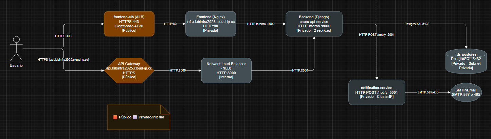
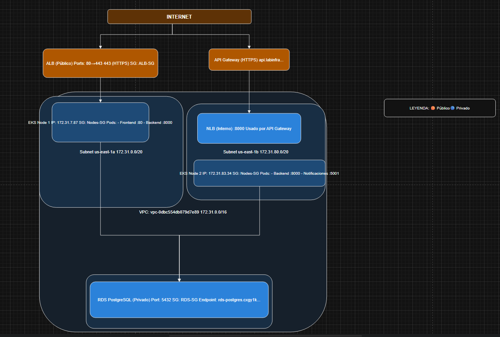

Tecnólogo en Tecnologías de la Información | Cloud & Backend
Aplicación full-stack desarrollada con Django, PostgreSQL, Docker y Kubernetes, desplegada en AWS mediante EKS, ECR, EC2, RDS, S3 e IAM. Incluye un microservicio adicional en Flask para notificaciones y arquitectura basada en microservicios.
El sistema está compuesto por un backend en Django, un microservicio independiente en Flask para notificaciones, y un frontend web ligero. Todos los componentes fueron dockerizados, subidos a ECR e implementados en Kubernetes (EKS), utilizando RDS como base de datos y S3 como almacenamiento.
 La solución implementa una API REST para registro de usuarios, un sistema de notificaciones independiente, contenedores Docker para cada servicio y una infraestructura orquestada completamente en Kubernetes sobre AWS. Las imágenes fueron enviadas a ECR y los pods desplegados en EKS utilizando manifests YAML.